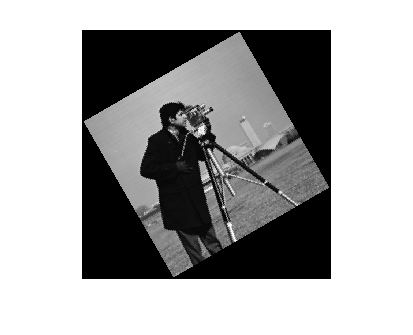
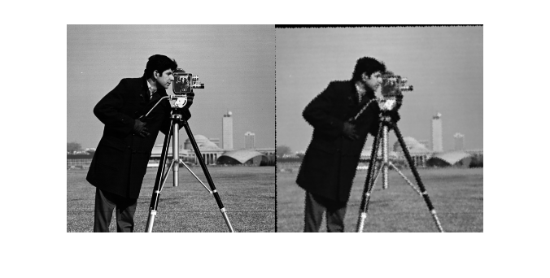

歪んだイメージの回転およびスケールを検出
あるイメージが回転とスケールの変更によってのみ他と比較して変形していることを知っている場合、cp2tform を使用して、回転角と倍率を見つけることができます。その後、元のイメージを復元するために歪んだイメージを変換することができます。
目次
手順 1: イメージの読み取り
イメージをワークスペースに読み取ります。
original = imread('cameraman.tif'); imshow(original); text(size(original,2),size(original,1)+15, ... 'Image courtesy of Massachusetts Institute of Technology', ... 'FontSize',7,'HorizontalAlignment','right');

手順 2: イメージのサイズ変更と回転
scale = 0.7; distorted = imresize(original,scale); % Try varying the scale factor. theta = 30; distorted = imrotate(distorted,theta); % Try varying the angle, theta. figure, imshow(distorted)
手順 3: コントロール ポイントの選択
コントロール ポイントの選択ツールを使用して、少なくとも 2 組のコントロール ポイントを選択します。
input_points = [151.52 164.79; 131.40 79.04]; base_points = [135.26 200.15; 170.30 79.30];
事前に選択されたポイントを使用してこの例の残りを実行できますが、自分でポイントを選択して結果が異なることを確認してください。
cpselect(distorted,original,input_points,base_points);
[ファイル] メニュー、[ポイントをワークスペースへ保存] オプションを選択して、コントロール ポイントを保存します。ポイントを保存して変数 input_points と base_points を上書きします。
手順 4: 変換の推定
コントロール ポイントの数に合わせて適切な TFORM 構造体を検出します。
t = cp2tform(input_points,base_points,'nonreflective similarity');
手順 5 および手順 6 の終了後、'nonreflective similarity' の代わりに 'affine' を使用して、手順 4 から手順 6 までを繰り返してください。 何が起こりますか? 結果は 'nonreflective similarity' を使用した場合と同じですか?
手順 5: スケールと角度の解
TFORM 構造体 t は、t.tdata.Tinv に変換行列を含んでいます。変換には回転およびスケールのみが含まれているのがわかっているため、スケールと角度を復元する計算は比較的簡単です。
Let sc = s*cos(theta) Let ss = s*sin(theta)
Then, Tinv = t.tdata.Tinv = [sc -ss 0; ss sc 0; tx ty 1]
where tx and ty are x and y translations, respectively.
ss = t.tdata.Tinv(2,1); sc = t.tdata.Tinv(1,1); scale_recovered = sqrt(ss*ss + sc*sc) theta_recovered = atan2(ss,sc)*180/pi
scale_recovered =
0.7000
theta_recovered =
29.3741
scale_recovered および theta_recovered の復元された値が「手順 2: イメージのサイズ変更と回転」で選択したスケール値および角度値と一致しなければなりません。
手順 6: 元のイメージの復元
TFORM 構造体 t および original のサイズに関する知識を使用して、回転およびスケーリングされたイメージ distorted を変換することにより、元のイメージを復元します。
D = size(original); recovered = imtransform(distorted,t,'XData',[1 D(2)],'YData',[1 D(1)]);
モンタージュで recovered と original を並べて比較します。
figure, imshowpair(original,recovered,'montage')
 歪みと復元のプロセスであるため、recovered (右) の画質は original (左) の画質と一致しません。特に、イメージを縮小すると情報が失われます。境界線周辺が不自然になるのは、変換の精度が限られているためです。「手順 3:コントロール ポイントの選択」で多くのポイントを選択すると、変換はより正確になります。